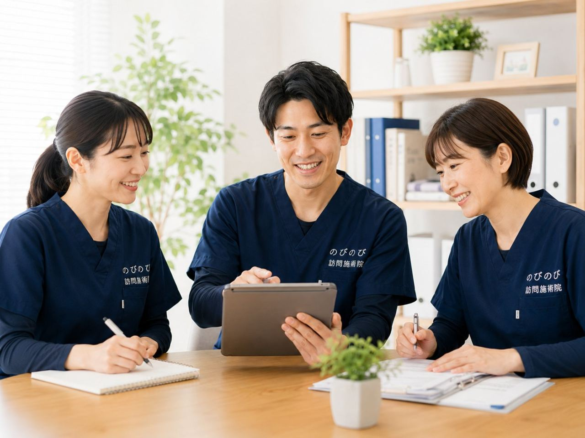

骨折で入院したあと、退院してからどうも元気が戻らない。しばらく寝て過ごすうちに足腰が弱って、立ち上がりにくくなった。ご高齢の方は、体を動かさない時期が少し続いただけで、筋力や体の動きがぐっと落ちてしまうことがあります。こうした状態は「廃用症候群」とも呼ばれます。この記事では、動かない時期を経たあとの体に訪問鍼灸マッサージができること、見逃したくない注意のサイン、そして費用のことまでを、施術の現場からお伝えします。負担にならない程度に、慣れたご自宅から始められる在宅ケアの選択肢として読んでいただければ幸いです。
結論から先に。退院後に進みやすい廃用症候群（使わないことで進む筋力低下や関節の拘縮）を防ぐ在宅ケアとして、訪問鍼灸マッサージという方法があります。医療機関の治療やリハビリが主で、鍼灸マッサージはそれを補う立場です。骨折後などに残る痛みは、医師が治療の必要を認めれば医療保険の対象になり、1回の総額3,950円、1割負担ならおよそ395円。エリア内は別途の出張費がかからず、介護保険の支給限度額とも別枠です。要介護認定は不要ですが、医師の同意書が必要です。患部の強い痛み・腫れ・発熱など急な変化があるときは、まず主治医へご相談ください。
なぜ、動かない時間が体を弱らせるのか
骨折や病気での入院、あるいは痛みをかばって動くのを控えていた時期。体を動かさない時間が続くと、筋肉は思っている以上に早く落ちていくと言われます。とくにご高齢の方では、数日から数週間、寝て過ごすだけで、立つ・歩くといった動作が難しくなることがあります。
筋力が落ちると動くのがこわくなり、こわいからさらに動かなくなる。この悪循環に入ってしまうと、回復には時間がかかりやすくなります。骨折そのものが治っても、その間に落ちた筋力や固くなった関節は、放っておいて自然に元へ戻るとは限りません。「もう大丈夫」と思っていたら以前のようには動けなくなっていた、というご相談も現場では珍しくありません。ですから、今ある動ける範囲を保ちながら少しずつ取り戻していくケアが大切になります。
治療とリハビリが主、鍼灸マッサージは補助という位置づけ
はじめに大切なことをお伝えします。骨折後の体づくりは、まず主治医による治療と、病院や訪問リハビリなどの専門的なリハビリテーションが中心です。訪問鍼灸マッサージは、それに置き換わるものではなく、痛みをやわらげたり、こわばりを軽くしたり、動かしやすい状態を保ったりして、主となる治療やリハビリを支える補助的なケアという立場です。
「どちらか一方を選ぶ」ものではありません。医師の指示やリハビリの方針を確認しながら、そのすき間を埋めるように使っていただくと、無理なく続けやすくなります。訪問リハビリとの違いについては訪問リハビリとの違いもあわせてご覧ください。
ケアを始める前に確認したい、受診のサイン
ケアを始める前に、どうしてもお伝えしておきたいことがあります。骨折した部位がまだ治りきっていない、傷がある、患部が赤く腫れて熱をもっている、強い痛みや発熱が続いている、急に動きや様子が変わった。こうしたときは、施術より先に主治医の指示を確認してください。
手術のあとで、動かしてよい範囲に制限がかかっていることもあります。安全にケアを進めるために、こうした点は事前に必ずうかがい、必要に応じて主治医とも相談しながら進めます。判断に迷うサインがあれば、まず医療機関へ、という順番を大切にしています。
初回の訪問で、体のどこを確かめるのか
お宅にうかがってまず確かめるのは、どの筋肉がどれくらい落ちているか、関節が硬くなりかけていないか、痛みが残っている部位はどこか、そして今どれくらい動けるか、といった点です。
ひと口に「体力が落ちた」と言っても、立ち上がりが難しい方、歩くとふらつく方、痛みが動きを止めている方と、状態は一人ひとり違います。今どの段階にいるのかを見きわめたうえで、その日にどこまで動かすかを決めていきます。無理をさせず、しかし止めてしまわないこと。この見きわめを何より大切にしています。
落ちた筋力に、鍼灸マッサージと機能訓練でどう働きかけるか
鍼やお灸、そして体をほぐす手技には、こわばった筋肉をやわらげ、血のめぐりを促し、残った痛みを軽くする働きが期待できます。あわせて、関節をやさしく動かして動く範囲を保つ機能訓練や、足の指を使う練習、立ち座り・歩行の練習など、その方の段階に合った運動を、追加料金なしのケアとして行います。
たとえば、まず足の指でタオルをたぐり寄せる練習から始め、足首の動きを確かめてから、椅子からトイレまでの歩行練習へと進めていくこともあります。無理のない範囲で体を動かすことを続けていくと、少しずつ「できること」が戻っていく方もいらっしゃいます。もちろん変化のあらわれ方には個人差があり、同じようにいくとは限りませんが、一歩の積み重ねが自信につながっていきます。
外出そのものがつらい時期こそ、自宅で
体力が落ちている時期は、外に出ること自体が大きな負担になります。歩くのが不安、転ぶのがこわい、付き添いがないと動けない。この「外出という壁」がなくなるだけで、ケアはぐっと続けやすくなります。
訪問鍼灸マッサージは、通院がむずかしい方のご自宅にうかがって施術します。慣れた自宅で、自分のペースを崩さずに取り組めるのも在宅ならではの良さです。デイサービスや訪問リハビリと組み合わせて、体を動かす機会を保つ一つの手段として使っていただけます。
「体力が戻ってから」を待つと、かえって遅れることも
動かない時間を経たあとの体は、早めに動かし始めるほど取り戻しやすいと言われます。「もう少し体力が戻ってから」と待っているうちに、かえって筋力が落ちてしまうことも少なくありません。
まだ本格的に動けなくても、寝たまま・座ったままでできる範囲から始められます。今の状態に合わせて無理なくできることからスタートしますので、退院して間もない時期であっても、あきらめずにご相談ください。退院後のケア全般については再入院を防ぐ在宅ケアも参考になさってください。
次の転倒・骨折を防ぐという視点から
一度骨折をすると、動くのがこわくなり、こわいからさらに動かなくなって筋力が落ち、その結果また転びやすくなる。そんな流れに入りやすくなります。それだけに、痛みをやわらげて動ける範囲を保ち、足腰を支える力を落とさないことが、次の転倒や骨折を防ぐことにもつながると考えられます。
施術だけで転倒を防げるわけではありませんが、動かしやすい体を保っておくことには、日々の安全にとって確かな意味があります。家の中で気をつけたい動きや、負担の少ない立ち座りの仕方も、その方の状態を見ながらお伝えします。背骨の圧迫骨折のあとのケアが気になる方は、あわせてご覧ください。
介助を続けるご家族の負担も、少し軽く
体力が落ちた時期のケアや介助は、ご家族にとっても負担の大きいものです。立ち上がりや移動の介助が続けば、支えるご家族の腰や体にも無理がかかります。
専門の施術者が定期的に入り、ご本人が少しでも自分で動ける範囲を保てるよう支えることは、まわりでケアするご家族の負担を軽くすることにもつながります。施術のたびに体のようすをお伝えし、家の中での介助のちょっとしたコツもお伝えします。ご本人だけでなく、ご家族が少しほっとできる時間になればと考えています。
費用のこと｜医療保険で1回3,950円・1割約395円
骨折後などに残る痛みは、医師が治療の必要を認めて同意書を出してくれれば、医療保険（療養費）の対象になります。国家資格をもつはり師・きゅう師がご自宅にうかがい、料金は1回の総額3,950円、自己負担は1割の方でおよそ395円です。
対応エリア内であれば、別途の出張費や交通費はかからず、この料金に含まれています。さらに、この費用は介護保険の区分支給限度額とは別枠なので、訪問リハビリやデイサービスの利用枠を圧迫しません。要介護認定を受けていない方でも、医師の同意書があれば利用できます。これはお得な特典ではなく、公的保険にもとづく正式な料金です。料金の詳しい考え方は料金のページもご覧ください。
訪問先でうかがったお話｜動くことのこと
骨折のあとのケアでうかがっていると、ストレッチのときに「本当はしたいんですよ、自分ではできないから」と話される方がいます。動かしたい気持ちはあっても、ひとりでは同じところまで伸ばせない、という声です。
かかと上げや足踏みを続けている方からは、「だんだん力が出てきた」と変化を口にされることがあります。付き添って歩いた日に、自分だけではできなかったことだと話される方もいました。感じ方には個人差があり、医療機関での機能回復の取り組みやご自身の日々の積み重ねと合わさって出てくるものです。
一方で、やればやるほど良くなると考えて無理をされる方もいます。うかがったときは、休むことも同じくらい大切だとお伝えし、その日の体調に合わせて量を加減しています。
よくある質問
退院したばかりですが、いつから始められますか？
骨折した部位の状態が落ち着いていれば、退院後の早い時期から始められることが多いです。ただし動かしてよい範囲に制限がある場合は、主治医の指示を確認しながら進めます。まずは状態をうかがったうえで、無理のない形をご提案します。
寝たきりに近い状態でも受けられますか？
受けられることが多いです。寝たまま・座ったままでできるケアから始め、こわばりをやわらげ、動く範囲を保つことを目指します。今できることから少しずつ進めますので、まずは相談だけでも構いません。感じ方には個人差があります。
要介護認定を受けていませんが、利用できますか？
利用できます。訪問鍼灸マッサージは医療保険で受けるため、要介護認定は必要ありません。ただし医師の同意書が必要です。同意書のもらい方が分からない場合も、取得の流れをご案内しますのでご相談ください。
訪問リハビリを受けています。併用できますか？
併用できます。訪問鍼灸マッサージは介護保険の支給限度額とは別枠のため、リハビリの利用枠を圧迫しません。治療やリハビリが主で、鍼灸マッサージはそれを支える補助という位置づけです。詳しくは訪問リハビリとの違いのページもご覧ください。
費用はどれくらいかかりますか？
医師の同意があり医療保険の対象になる場合、1回の総額は3,950円で、自己負担は1割の方でおよそ395円です。対応エリア内なら別途の出張費はかかりません。
出張費や交通費は別にかかりますか？
対応エリア内であれば、別途の出張費や交通費はかかりません。エリア内は一律で料金に含まれています。訪問にあたって追加の費用が発生しないので、費用の見通しを立てやすいと思います。
背骨の圧迫骨折のあとでも受けられますか？
状態が落ち着いていれば受けられることが多いですが、まず主治医に動かしてよい範囲を確認することが大切です。痛みや変化が強い時期は無理をせず、医療機関の指示を優先します。詳しくは圧迫骨折のあとのケアのページも参考になさってください。
どれくらいで効果が出ますか？
変化のあらわれ方には個人差があり、はっきりとした期間をお約束することはできません。体の様子を見ながら続けることで、動きやすさや痛みの感じ方が少しずつ変わっていく方もいらっしゃいます。焦らず、その方のペースに合わせて進めます。